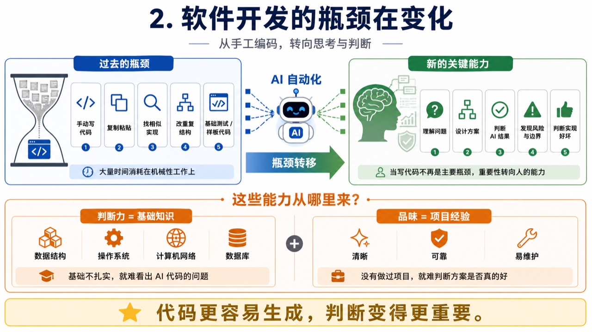
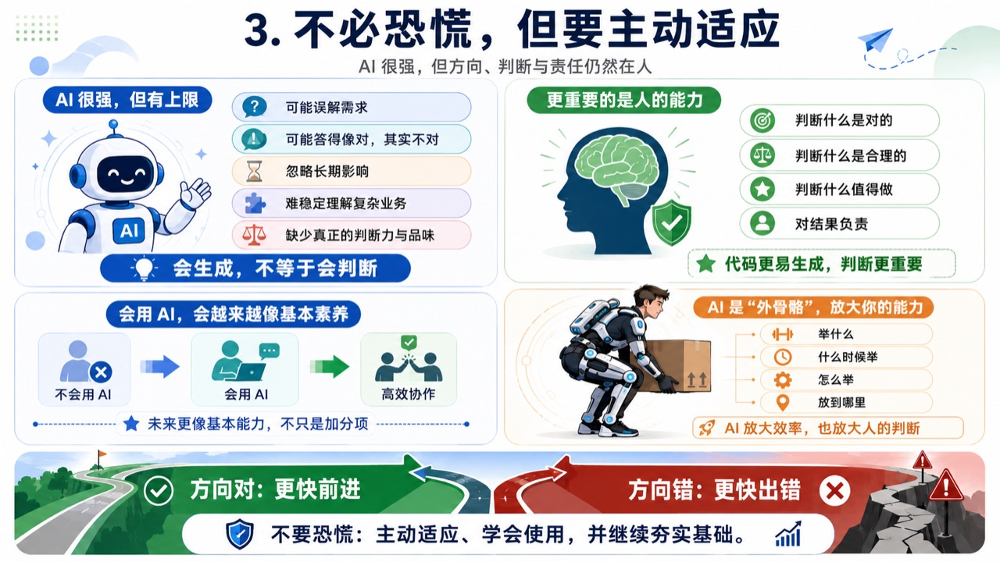
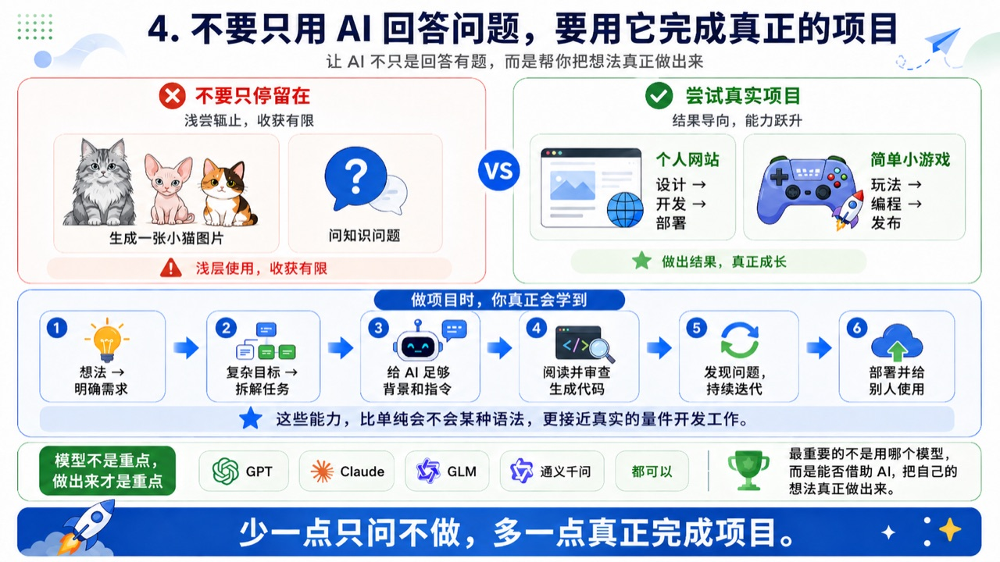

03 / 思考
AI 时代的思考
01AI 已经在改变软件开发方式
从 2026 年 1 月起，我工作中约 90% 的代码不再逐行手写，而是由 AI Coding Agent 生成——重要项目用 GitHub Copilot + GPT（AI 写、我边看边调，更可控），自动化任务用命令行里的 Claude Code + Claude Opus（让 Agent 独立完成、我再统一检查）。
效率提升来自两个方向：横向开多个窗口让不同 Agent 并行分析、开发、修 bug、补测试，同时推进任务的能力约提升到 4 倍；纵向单个任务里搜索、重复编码、重构、测试、基础调试都被加速，编码效率约提升到 3 倍。
但人没有退场——仍要明确需求与目标、拆解任务并给上下文、判断方案是否合理、审查代码与测试结果、用进一步指令持续完善。
AI 替代了大量手工编码，但没有替代需求理解、技术判断和结果负责。
02软件开发的瓶颈正在变化
过去大量开发时间消耗在机械性工作上：手动敲代码、复制粘贴、找相似实现、改重复结构、写基础测试和样板代码。这些正在被 AI 大量自动化。
当「写出代码」不再是主要瓶颈，真正重要的能力转向：能否准确理解问题、设计合理方案、判断 AI 结果对不对、发现隐藏的风险与边界、判断什么才是好的实现。
而这些能力有来源：判断力来自扎实的基础知识，品味来自长期的项目经验。没有数据结构、操作系统、网络、数据库的底子，你看不出 AI 代码为什么有问题；没真正做过项目，也很难判断一个方案是否清晰、可靠、易维护。
代码更容易生成，判断变得更重要。

03不必恐慌，但要主动适应
AI 看起来已经很强，但当前基于大语言模型的系统仍有可预见的上限：它会误解模糊需求、给出看似合理实则错误的结果、忽略系统的长期影响、难以稳定理解复杂业务，也缺少真正的判断力和品味。
所以别因为 AI 会写代码，就觉得学计算机基础没意义——恰恰相反，当代码生成越来越容易，判断什么是对的、什么是合理的、什么值得做，会变得更重要。「会用 AI」很可能会成为从业者的基本素养，而不是加分项。
可以把 AI 理解为人的外骨骼：它帮你举起以前举不动的重物，但举什么、何时举、举起来放哪，仍由你决定。它放大的不只是效率，还有判断——方向对时让你更快前进，方向错时也让你更快得到一个错误结果。
不要恐慌：主动适应、学会使用，并继续夯实基础。

04学会使用：不要只用 AI 回答问题，要用它完成真正的项目
强烈建议用 AI Coding Agent 和大模型，去做一个自己真正感兴趣的项目。别只停留在生成一张小猫图片、问问知识性问题——试着完成一个有真实结果的小项目，比如搭建并部署个人网站、开发一个简单的小游戏。
在这个过程中你会真正学到：把模糊想法变成明确需求、把复杂目标拆成具体任务、给 AI 足够的背景和指令、阅读并审查生成的代码、发现问题并持续迭代、把项目部署给别人用。这些能力在未来是硬通货。
如果 GPT 或 Anthropic 的模型不方便用，GLM、通义千问等国内大模型对学习和个人项目也足够强。重点不是用哪个模型，而是能否借助 AI 把想法真正做出来。
尝试使用AI智能体完成真正的项目！
